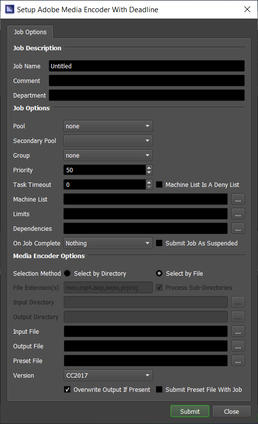
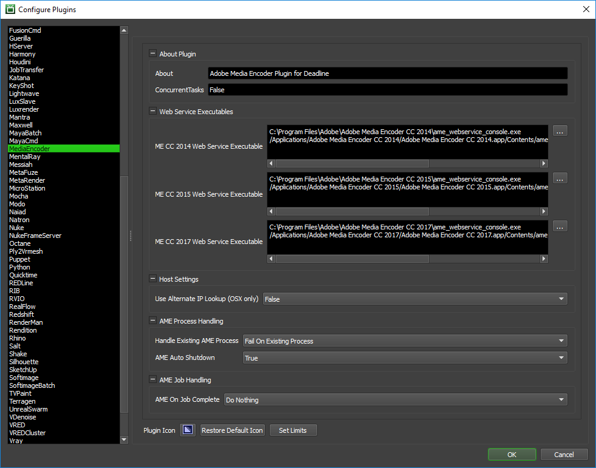

Media Encoder¶
Job Submission¶
You can submit Adobe Media Encoder jobs from the Monitor.
Submission Options¶
The general Deadline options are explained in the Job Submission documentation, and the Draft/Integration options are explained in the Draft and Integration documentation.
The Adobe Media Encoder specific options are:
Selection Method: Choose the selection method by file or by directory.
File Extension(s): A comma separated list of file extension(s) to search for supported file formats for batch submission, ie: mov,mp4,aep,aepx,prproj. Image file sequences are NOT supported.
Process Sub-Directories: Optionally choose to scan sub-directories as well for supported files.
Input Directory: Choose a root directory to scan for all supported video files.
Output Directory: Choose a root directory to output the generated media file(s).
Input File: The path to the media to be encoded. It may be a media file in any of the formats supported by AME, a Premiere Pro project (.prproj), or an FCP XML project (.xml).
Output File: A path to a file that will contain the encoded result. You don’t have to include a file extension as the preset *.epr file will potentially define it as well.
Preset File: The preset file to use. This file determines what to do with the input, and can be exported from Media Encoder presets.
Version: The version of Adobe Media Encoder to use for encoding.
Overwrite Output If Present: If enabled, AME will overwrite any file located at the output location with the new output.
Submit Preset File With Job: If enabled, the preset file will be uploaded to the Deadline Repository along with the Job (useful if your .epr file is local).
Plugin Configuration¶
You can configure the Media Encoder plugin settings from the Monitor. While in power user mode, select Tools -> Configure Plugins and select the Media Encoder plugin from the list on the left.
Web Service Executables
Web Service Executable: The path to the Adobe Media Encoder Web Service executable file used for encoding. Enter alternative paths on separate lines. Ensure you use
ame_webservice_console.exeon Windows andame_webservice_agenton macOS. Do NOT declare the path to the actual Adobe Media Encoder executable here!Note
The path to Adobe Media Encoder’s webservice console (Windows) or agent (macOS) executable:
Windows: C:\Program Files\Adobe\Adobe Media Encoder xxxx\ame_webservice_console.exe macOS: /Applications/Adobe Media Encoder xxxx/Adobe Media Encoder xxxx.app/Contents/ame_webservice_console.app/Contents/MacOS/ame_webservice_agent
where xxxx is the YEAR such as 2017.
Host Settings
Use Alternate IP Lookup (macOS only): If enabled and only applicable on macOS, use an alternate method to return the current local IP address (optional). Default: False.
AME Process Handling
Handle Existing AME Process: Either Do Nothing, FAIL on existing AME process or KILL the existing AME process if already running. Default: “Fail On Existing Process”.
AME Auto Shutdown: Automatically force shutdown of Adobe Media Encoder application when job completes. Default: True.
AME Job Handling
AME On Job Complete: If desired, you can automatically archive or delete the Adobe Media Encoder job when it completes. Default: “Do Nothing”.
Web Service¶
Deadline Workers that render Media Encoder jobs use the media encoder web service. To modify the web service port number or address you need to modify the ame_webservice_config.ini file. The ame_webservice_config.ini file is found in the same directory as the Adobe Media Encoder Web Service executable file. Note that the default port being used is 8080. This INI file may not exist in a fresh install of Adobe Media Encoder, in which case the default values will be used.
Example of the config file:
# leaving IP blank/commented out will default to whatever IP address the
# web service is able to sniff out
ip = 127.0.0.1
port = 8080
# restart_threshold: if this value is set, the AME engine will restart itself
# after x jobs are completed
#restart_threshold = 10
# job_history: if this value is set, the server will retain information on the
# last x completed jobs
job_history = 100
FAQ¶
What file formats does Adobe Media Encoder support?
Adobe have published this list of known supported file formats in AME.
Does Deadline Support Adobe Media Encoder 2021 or 2022?
Deadline is unable to support Media Encoder 2021 or any version of Media Encoder 2022 before 2022.5. In order to verify the version you have installed you can follow this guide.
Error Messages and Meanings¶
This is a collection of known Media Encoder error messages and their meanings, as well as possible solutions. We want to keep this list as up to date as possible, so if you run into an error message that isn’t listed here, please visit the Thinkbox Help Centre and let us know.
Currently, no error messages have been reported for this plugin.

{kind=link}
{kind=link}